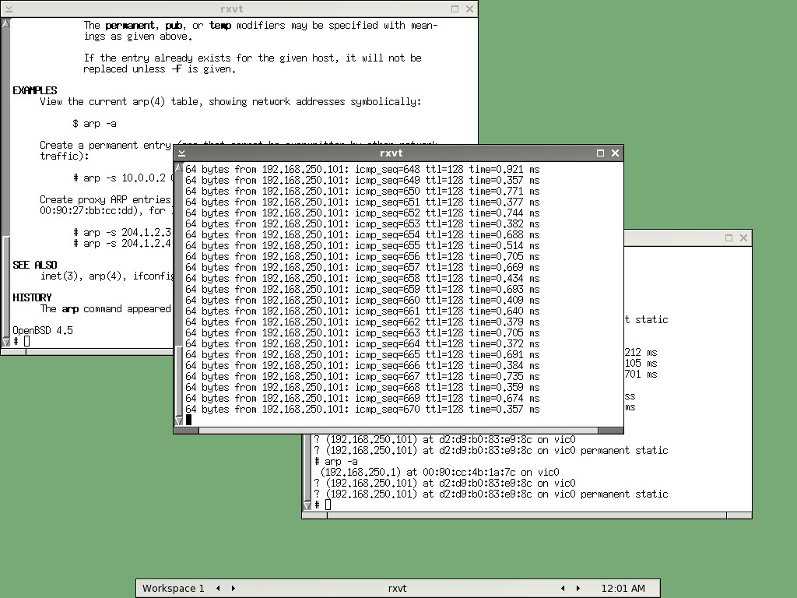

カテゴリ: BSD
日記/2009/05/05/VMware5でのOpenBSD4.5のインストールメモにてOpenBSD4.5をセットアップできました。
その後、packagesから幾つかパッケージを追加し、Xを設定してblackboxを立ち上げたのでメモ。
pkg_add, pkg_info でパッケージを追加
packagesについては下記URLを参考に入れてみました。
- OpenBSD Ports and Packages
最初は "ftp://ftp.kddlabs.co.jp/OpenBSD/" を使おうとしたのですが、どうも"t"で始まるパッケージまでしか入っていないようでしたので、 "ftp://ftp.jaist.ac.jp/pub/OpenBSD/" に変えました。
# export PKG_PATH=ftp://ftp.jaist.ac.jp/pub/OpenBSD/4.5/packages/ # pkg_add bash
という具合に・・・最初は、しようかな、と思ったんですが、暫くtry & error していく内に、単純にftpでtgzをローカルに落として、ローカルファイルを直接指定した方が早そうだったのでそちらに切り替えました。
bash上でvimが使えれば良かったので、vim7, bash、あとおまけでwget, Xのターミナルを使いたかったのでblackbox(ウインドウマネージャ)とrxvtを入れました。
pkg_addは"-n"オプションと"-v"オプションが助かりました。
# pkg_add -n -v xxxx.tgz
とすれば、実際にはインストールは行いません。何が行われるか表示だけされるので、それを確認後、
# pkg_add -v xxxx.tgz
で実際にインストールできます。
pkg_infoについてはローカルに落としたtgzファイルの情報取得はもちろんのこと、
$ pkg_info -E /usr/local/bin/bash /usr/local/bin/bash: bash-3.2.48 bash-3.2.48 GNU Bourne Again Shell
というように "-E" でローカルファイル名を指定すると、それを含んだpackage名を表示してくれますので、助かります。
Xの設定
基本的に以下のOpenBSD FAQページで事足りました。
http://www.openbsd.org/faq/faq11.html
流れとしては、
Set machdep.allowaperture=2 in /etc/sysctl.conf.
とあるとおり /etc/sysctl.conf を修正し(matchdep.allowapertureはsysctlコマンドからの実行時変更は禁止されてました・・・)、
# X -configure
でカレントディレクトリに xorg.conf.new ファイルが作成されますので、
# X -config /root/xorg.conf.new
で作成された設定ファイルでXを起動します。ALT + CTRL + BACKSPACEでXを終了できます。
VMware上ですので、以前自分が書いた 技術/Linux/VMwareのゲストOS時にXが800x600でしか立ち上がらない場合 を参考に、"Monitor"セクションに以下2行を追加します。
HorizSync 1.0 - 10000.0 VertRefresh 1.0 - 10000.0
"Screen"セクションも、以下の2つにまとめてしまいます。
Section "Screen"
Identifier "Screen0"
Device "Card0"
Monitor "Monitor0"
SubSection "Display"
Viewport 0 0
Depth 24
Modes "1024x768" "800x600" "640x480"
EndSubSection
SubSection "Display"
Viewport 0 0
Depth 16
Modes "1024x768" "800x600" "640x480"
EndSubSection
EndSection
また"InputDevice"セクションで、下記ページを参考に日本語キーボードを指定しました。
- "freebsd 日本語キーボードの設定"
最初は未設定だったのですが、１～２個だけ、ずれてしまうキーがあったので指定しました。
コンソールについては、"/etc/kbdtype" が "jp"になっていたためか、特にキーはずれていませんでした。ですので上記URLでの"keymap"のrc.confへの追加は行っていません。
一通り設定が終われば、xorg.conf.newを /etc/X11/xorg.conf にコピーし、startxで動作確認します。
その後blackboxをpackagesよりpkg_add し、
# startx /usr/local/bin/blackbox
で動作確認した結果が下記スクリーンショットになります。

無事XGA(1024x768)でblackboxが起動しました。あとは ~/.xinitrc に "/usr/local/bin/blackbox" と書いてあげれば、次回、"startx"するだけで自動的にblackboxが起動します。
ゲストOSとの接続がやっぱり数分 - 10分で切れるので、試しにARPを静的に設定してみた
元々Xの設定をする気は無かったのですが、やっぱりゲストOSとの接続が数分 - 10分前後で切れて暫く無応答になります。
かなり当てずっぽうなのですが、ホストOS/ゲストOSの両方のARPテーブルにそれぞれ静的にお互いのアドレスを追加してみました。これで暫く様子見です。
ゲストOS :
# arp -s 192.168.250.101 d2:d9:b0:83:e9:8c permanent # arp -a (192.168.250.1) at 00:90:cc:4b:1a:7c on vic0 ? (192.168.250.101) at d2:d9:b0:83:e9:8c on vic0 ? (192.168.250.101) at d2:d9:b0:83:e9:8c on vic0 permanent static
・・・なんか二つ登録されたりしてますが放置。
ホストOS :
DOS> arp -s 192.168.250.150 00-0c-29-5f-a9-d2 DOS> arp -a Interface: 192.168.250.101 --- 0x10005 Internet Address Physical Address Type 192.168.250.1 00-90-cc-4b-1a-7c dynamic 192.168.250.150 00-0c-29-5f-a9-d2 static